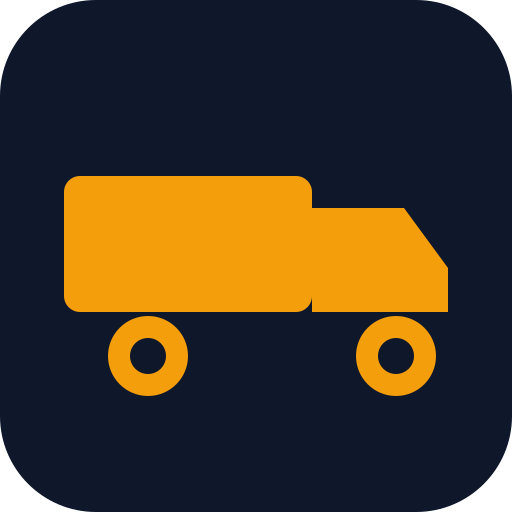

Anmeldung
Pflichtfeld – bitte das Kennzeichen dieses LKW eingeben.
Je Station einmal ausdrucken und vor Ort anbringen. „Boden abkippen" ist EIN Code – Nesselröden vs. Baustelle entscheidet das GPS.
Nur für den Bauleiter. / Doar pentru șeful de șantier.
Erstellt sofort die Excel aus allen bisher hochgeladenen Scans (alle LKW) und mailt sie an die eingestellten Empfänger. Achtung: Die enthaltenen Scans gelten danach als verarbeitet und werden aus dem Daten-Repo gelöscht.
Atenție: scanările incluse se șterg din baza de date după trimitere (sunt considerate raportate).